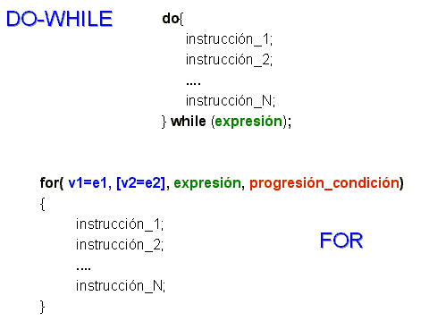
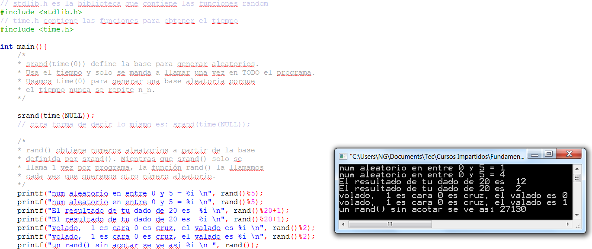
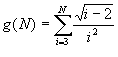

|
|
| Actividad:
Desarrollando
programas en C No. 7. Unidad: Estatutos de repetición. |
|
| Descripción | |
 |
|
| Modalidad | |
 |
|
| Objetivos de la actividad | |
 |
|
| Instrucciones | |
 |
Forma de trabajo:
Utiliza el siguiente
esquema como apoyo para desarrollar tu laboratorio:

La
función rand( ) de la
librería <stdlib.h>,
regresa un número entero aleatorio. Si al resultado de esta función le
aplicamos la operación % x, podemos generar un número entre 0 y
(x-1). El siguiente programa muestra un ejemplo de como se usan
las funciones para obtener generar aleatorios. Utiliza esté código como
ejemplo para desarrollar la función números_aleatorios.
Ejercicio 1 Utilizando un ciclo for, implementa el procedimiento números_aleatorios, que despliega en pantalla 50 números aleatorios entre 0 y 20. Ejercicio 2 Utilizando un ciclo for, implementa la función sumatoria que evalúe la siguiente sumatoria : 
casos de prueba:
El procedimiento menú, que despliegue el siguiente menú en pantalla: MENú a. Números aleatorios b. Función G s. Salir Opción? De acuerdo a la opción seleccionada por el usuario utiliza la función apropiada de las implementadas anteriormente. Utiliza un ciclo do-while para desplegar el menú en pantalla hasta que el usuario seleccione la opción de Salir. Recuerda que la captura de datos y validación de valores debe ser realizada en el main( ), pues las funciones NO pueden realizar las tareas de validación o captura de datos. Incluye el algoritmo como comentario arriba de cada función. Programa Abierto: Genera
tu propio programa donde apliques ciclos do-while y for (de al menos tres forma
diferentes), por formas diferentes se hace referencia a su estructura y
forma de contar. Este programa es tuyo, úsalo para hacer cosas interesante y retadoras no cosas fáciles. |
| Recursos | |
 |
|
| Especificaciones de entrega | |
 |
|
 |
|
| DR© Tecnológico de Monterrey Campus Querétaro| Departamento de Desarrollo Académico| México, 2012 | |